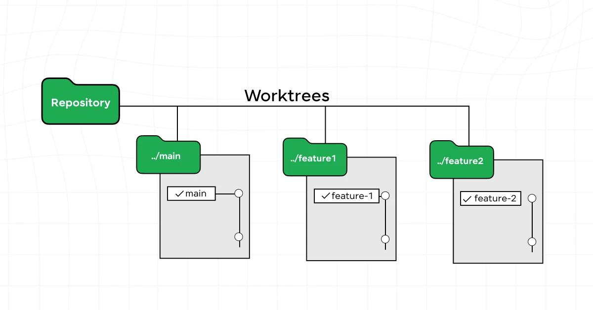

Engineering OrchestrationOMX
01 / 15
Oh-My-Codex · 分享版
Oh-My-Codex
把 Codex 从一次会话，变成可持续的工程系统
定位、架构、工作流、多 Agent 协作与落地方法，一次讲清。
OMX·Orchestration Layer·2026
基于《Oh-My-Codex 完整详解》整理
Opening · Positioning
01 · 定位What It Is
02 / 15
先建立正确心智模型
Execution Engine
Codex
负责做事
负责做事
理解代码、编辑文件、运行命令、生成实现。
Orchestration Layer
OMX
负责管事
负责管事
澄清、规划、分工、持久化、验证与恢复。
OMX 不是新模型，而是 Codex CLI 外面的一层工程化编排。
类比：oh-my-zsh 不替换 zsh，而是让它更好用
Act I · Definition
01 · 定位Why OMX
03 / 15
单次对话的上限，不等于工程任务的上限
为什么需要 OMX？
01
上下文会丢
任务跨天、终端重启或上下文压缩后，计划与决策容易断裂。
02
容易跑偏
需求边界没锁定，Agent 会用自己的假设补齐空白。
03
缺少分工
分析、实现、测试、评审全压在同一个执行视角里。
04
难以并行
多条独立工作线只能串行推进，复杂任务周期被拉长。
05
完成难证明
“代码写完了”不代表测试、构建、回归与验收都成立。
OMX 的价值：把这些问题变成运行时约束
Act I · Pain Points
02 · 原理Four Layers
04 / 15
从代码事实，到可恢复的执行闭环
四层架构
04
Workflow 状态机
控制阶段：澄清 → 规划 → 执行 → 验证，明确何时进入下一步。
03
Agent 调度层
控制分工：把探索、架构、实现、测试、评审路由给合适角色。
02
持久化上下文
控制连续性：将计划、状态、日志、目标与证据落到项目目录。
01
代码与仓库事实
控制真实性：先读当前代码、配置、Git 与项目规则，再做判断。
越往上越像“管理系统”，越往下越接近“事实来源”
Act II · Architecture
02 · 原理Durable Context
05 / 15
跨会话，不是“记住聊天”，而是“保存工程状态”
上下文要落盘
.omx/
├── context/ 需求上下文
├── specs/ 执行规格
├── plans/ 方案与拆分
├── goals/ 目标与账本
├── team/ 并行状态
└── logs/ 过程与证据
├── context/ 需求上下文
├── specs/ 执行规格
├── plans/ 方案与拆分
├── goals/ 目标与账本
├── team/ 并行状态
└── logs/ 过程与证据
状态
现在处于哪个模式、哪一步、谁在执行，下一步是什么。
计划
文件影响面、依赖关系、风险、顺序与验证策略。
决策
为什么这样选，哪些方案被排除，边界和非目标是什么。
证据
测试、构建、检查、截图或日志，支撑“任务真的完成”。
恢复任务时，Agent 读取的是结构化产物，而不是凭记忆猜上次做到哪里。
目录结构会随版本和 workflow 调整，核心思想不变
Act II · Persistence
02 · 原理Agents & Modes
06 / 15
不是 Agent 越多越好，而是角色与任务形状匹配
角色化分工
explore
查文件、符号、调用关系与现有模式。
planner
拆步骤、排依赖、识别风险。
architect
看边界、接口与长期取舍。
executor
实施、重构、补齐具体代码。
debugger
复现失败、定位根因、验证修复。
test-engineer
设计测试形状与覆盖范围。
verifier
检查完成声明是否有证据。
reviewer
按严重度审查风险与回归。
researcher
查官方资料、版本行为与上游证据。
dependency
评估包、SDK、升级与替换成本。
Ralph · 单 owner
适合边界清楚、需要持续推进和反复修复的任务。协调成本低，责任集中。
Team · 多工作线
适合实现、测试、文档、排查等独立工作线并行。收益来自并行，而不是人数。
先判断任务是否可拆，再决定是否并行
Act II · Agents
03 · 工作流Default Path
07 / 15
推荐默认路径
先问清，再做完
A disciplined engineering loop
01
$deep-interview
锁定目标、范围、非目标、决策边界与验收标准。
02
$ralplan
形成方案、文件影响面、风险、任务拆分与测试形状。
03
$ultragoal
将计划变成可追踪目标，按目标推进并留下 checkpoint。
04
$ralph / $team
单 owner 持续执行，或让独立工作线协调并行。
05
Verify
测试、lint、构建、静态检查与验收证据，不通过就继续修。
一句话记忆：$deep-interview → $ralplan → $ultragoal，执行模式按任务大小选择。
演示时逐步推进：每一步解决一种失控风险
Act III · Workflow

03 · 工作流Core Principle
08 / 15
OMX 最重要的不是命令，而是顺序
先把问题问清楚，
再把方案想清楚，
最后用证据证明做完。
Clarity→Plan→Execution→Evidence
阶段是护栏，不是仪式
Act III · Principle
03 · 工作流Parallel Team
09 / 15
Team 模式的核心不是“多开几个窗口”
并行如何成立？
01
任务先独立
实现、测试、文档、排查必须能在低冲突边界内推进。
02
工作区隔离
通过独立分支或 worktree，避免多个 Agent 直接抢同一份代码。
03
Leader 负责集成
子任务只交付边界内结果，主 Agent 统一合并、处理冲突与回归。
04
最终统一验证
并行完成不等于整体完成，集成后的测试与验收仍由 Leader 负责。

共享文件冲突很重时，并行可能比串行更慢
Act III · Team
04 · 落地Project Contract
10 / 15
规则、流程、角色和运行态，各放各的位置
四个入口，不要混
AGENTS.md
项目或团队的总工作契约：编码规范、验证要求、禁止操作、发布边界。
Rules
Skills
可复用流程：发布 QA、查日志、生成报告、特定业务操作与固定工作法。
Workflow
Agents
角色化能力：探索、规划、实现、调试、测试、评审、研究与依赖决策。
Roles
.omx/
当前任务的运行态与交付产物：规格、计划、目标、账本、团队状态和日志。
Runtime
重复出现的团队规则写进 AGENTS.md；重复出现的操作流程沉淀成 Skill。
这四层分清，项目越做越稳定，而不是越做越乱
Act IV · Contracts
04 · 落地Quick Start
11 / 15
从安装健康，到第一个完整任务
一条可复用的上手路径
# 安装后初始化
omx setup
# 检查 Codex、tmux、Git 与配置
omx doctor
# 在项目目录启动
omx
# 中断后恢复
omx resume01
一句话需求很模糊
$deep-interview "重构权限模块，实现 RBAC"
02
先评审方案和风险
$ralplan "输出文件影响面、风险和测试方案"
03
跨多步持续推进
$ultragoal "按批准计划执行并保留验证证据"
04
工作线确实独立时
$team 3 "实现、测试、文档并行推进"
小改动直接做；只有当任务复杂度需要时，才升级到完整 workflow。
命令和可用 workflow 会随 OMX 版本变化，以本机 catalog 为准
Act IV · Practice
05 · 选型Choose The Right Layer
12 / 15
它们不是谁替代谁，而是控制层级不同
怎么选？
Execution Engine
原生 Codex
直接、灵活、启动成本最低。
适合范围清楚的短任务和快速修改。
流程、记忆、分工主要靠当前会话维持。
Integrated Assistant
Cursor / Claude Code
IDE 或终端体验完整，上手直接。
适合日常编码、浏览代码与交互式迭代。
工作流编排与持久状态能力取决于产品本身。
Prompt Toolbox
轻量 Skills
低依赖、可组合、容易定制。
适合把一个个成熟方法固化成快捷流程。
通常不负责多进程调度和完整运行态。
Orchestration Runtime
OMX
把澄清、规划、执行、验证与沉淀串起来。
适合大型重构、遗留项目、跨天任务和多工作线。
环境与协调成本更高，不应滥用。
轻任务选低摩擦，复杂任务选强约束
Act V · Selection

05 · 选型Takeaway
13 / 15
把 OMX 用在值得的地方
从一次对话，
到可验证的系统。
值得用
- 大型重构与多模块改造
- 遗留代码库与复杂排查
- 跨多天、需要恢复的任务
- 可拆成独立工作线的并行任务
不必用重
- 一两行修改或一次性问答
- 无法运行测试和验证的空谈任务
- 共享文件高度冲突的伪并行
- 需求已经清楚且可直接完成的小任务
Clear·Plan·Execute·Verify·Remember
OMX 的本质：把 AI 编码从“会做”推进到“可管理、可恢复、可证明”
Act V · Takeaway
06 · 对比OMX vs mattpocock/skills
14 / 15
完整对比分析 · 第一部分
底层本质不同
Dimension
Oh-My-Codex · OMX
mattpocock/skills
产品形态
编排运行时独立 CLI 与运行态，位于 Codex 执行引擎之上。
提示词技能集由 Markdown Skill 组成，依托宿主 AI 工具执行。
状态持久化
.omx 工程状态保存规格、计划、目标、团队状态、日志与验证证据。
轻状态主要依赖当前会话、项目文档或宿主工具自身的上下文能力。
多 Agent
原生编排可组织 Team、角色路由、tmux 工作线与隔离式协作。
不负责调度Skill 改变当前 Agent 的做事方法，自身通常不启动多进程团队。
流程约束
阶段式 Workflow澄清、规划、目标执行、验证与恢复可形成闭环。
自由组合用户按需调用需求、PRD、TDD、诊断等独立技能。
使用成本
能力更重需要 Codex、Git、tmux、运行时配置与一定的调度学习成本。
摩擦更低安装和定制简单，更容易跨 Cursor、Claude Code、Codex 使用。
一句话：OMX 管运行时，skills 管当前 Agent 的方法
Act VI · Fundamentals
06 · 对比Workflow & Selection
15 / 15
完整对比分析 · 第二部分
刚性编排 vs 自由组合
OMX · Runtime Route
完整工程闭环
$deep-interview$ralplan$ultragoal$ralph / $teamVerify
由运行时管理阶段、角色、状态和恢复。优势是可追踪、可并行、可验证；代价是环境更重、协调成本更高。
Skills · Toolbox Route
按需拼装方法
/grill-me/to-prd/to-issues/tdd/diagnosing-bugs
用户决定调用顺序，宿主 Agent 负责执行。优势是轻量、透明、跨工具；代价是长期状态和整体闭环更多依赖使用者维护。
选择 OMX
大型重构 · 多模块并行 · 跨天任务 · 需要审计和恢复 · 团队标准化全流程
选择 mattpocock/skills
日常功能迭代 · 跨 AI 工具复用 · 低侵入改造 · 希望自主掌控步骤 · 快速定制方法
两者不是替代关系：复杂工程需要编排，日常开发需要低摩擦。
OMX 是运行时，skills 是工具箱；按任务复杂度选择控制强度
End · Comparison